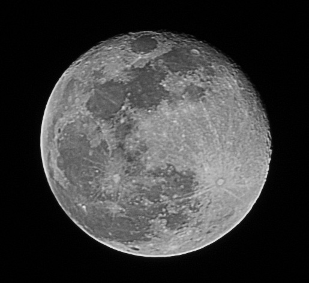
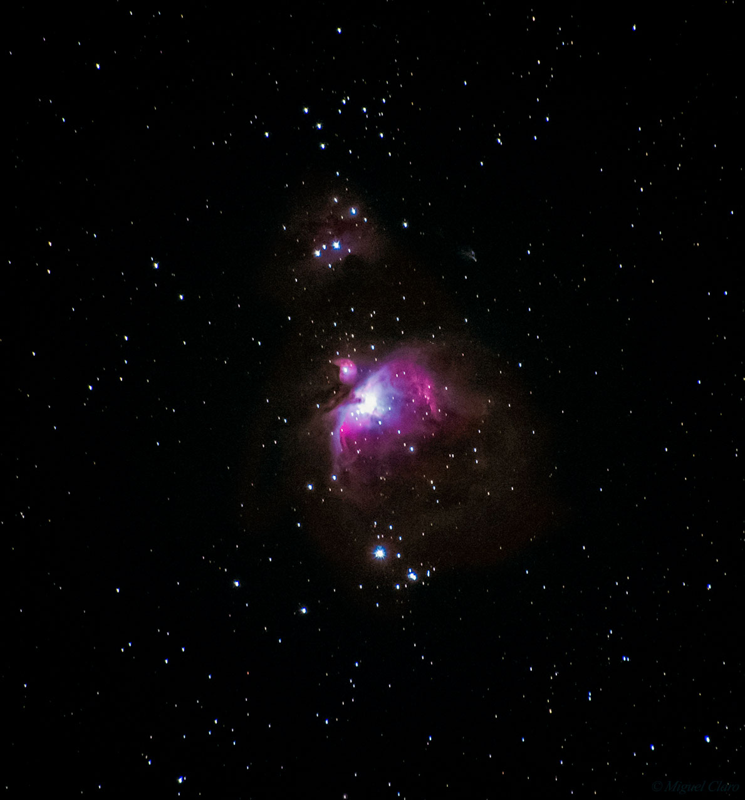
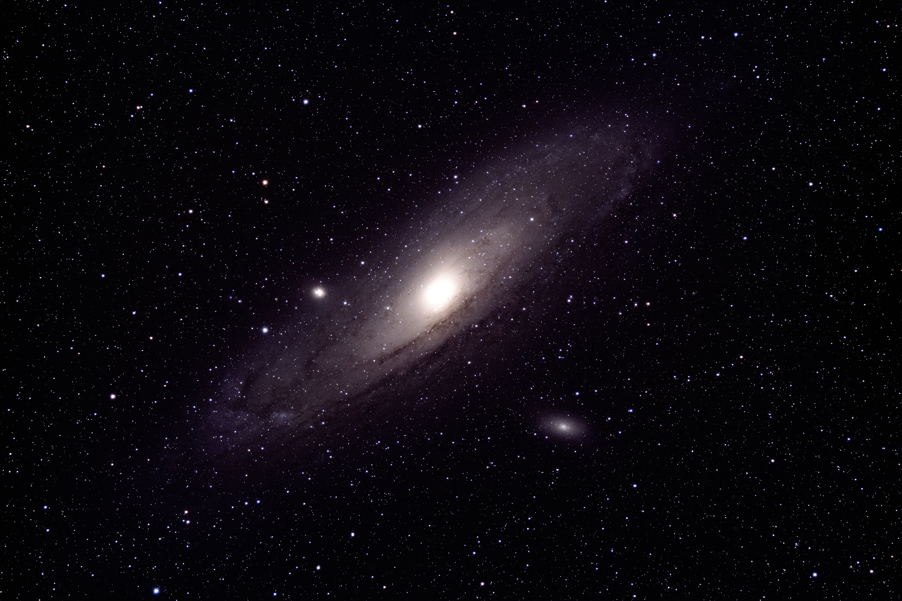
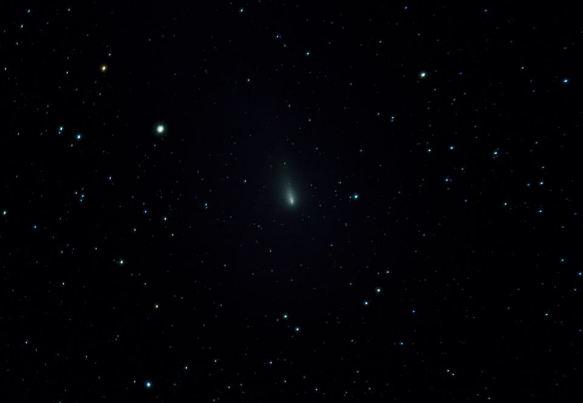

Hello,
What follows below is the beginings of my attempt to teach myself astrophotograhy and all the skills and knowledge of the night sky that come with it. Having started this endeavor towards the begining of the Spring semester of 2020, I am quite new to this but I hope you appreciate this sample of my work.
Please reach out to me if you have any questions and enjoy the photos!
Sam Feig

One of my first attempts at astrohpotography this semester for Pathway to Space. Having not done much astrophotography before it was a steep learning curve. I decided to start out with something easier, star trails. To do this all you have to do is set up a camera pointed at the sky and leave its shutter open for a long time (usually greater than 30 seconds). I also got to experiment with what is called image stacking, or the process of taking many images of the same thing and layering them one on top of the other to help bring out details of the dark sky and landscape that couldn't be caputered in one image. The star trails you seein this image are a result of Earth's rotation making it appear as if the sky around us is changing, when in fact it is the Earth (and by extension the camera and your eyes) that are moving at roughly 1,000 mph!

This is a wide angle photo of the star field above Boulder taken from up near the Royal Arch in Chautauqua. I edited this photo to bring out more of the stars that are normally hidden from our eyes due to light polution and their inadequate sensitivity. Most prominent in this photo is the appearance of a ebb and flow to the stars with lighter and darker patches in the background. This is in fact highlighing the variations in our galaxy and (I believe) is the Milky Way facing away from the core of our galaxy out towards the rest of space. The Milky Way Core can only be seen during the summer and early fall months in the northern hemesphere due to our relative position, but during the winter and spring you can still faintly see the outer edge of our galaxy and the slightly brighter stars and details that come with it.

Every year, Venus' orbit takes it close to the Pleades Cluster (Otherwise known as the 7 Sisters or M45). However, every 8 years is an extra special occurence called a conjunction, an event where from the observer's perspective, the objects appear very close together. This year, April 2020, is one of these special years where I was luck enough to have clear skys and a lot of free time thanks to Corona Virus where I could spend outside capturing this incredible event. The Pleades Cluster was also used to calibrate the Kepler Space Telescope for brighter stars they pointed it at the Pleades and had it identify the types of stars that it was made of, checking its results against already known facts to confirm its accurracy. After this, the Pleades had officially been used as an eye test for humans and for our machines and telescopes!

Taken from Aurora after having to abruptly move out of the dorms due to Corona Virus, I had the oportunity to try a new kind of astrohpotography. Planetary photography. On the week of April 6th, the largest 'supermoon' of the year called the Pink Moon. This occurs when the moon is at its perigee (the closest point to Earth) and is a full moon at the same time. Supermoons are about 7% larger and up to 16% brighter than an average full moon. This allowed for a unique oportunity to try somthing new as it is easier to photograph a supermoon and still be able to make out details of its surface without a telescope. I feel that it turned out even better than I could have hoped for as my first time photographing the moon, but I have a long way to go and with better equipment could proably even get enough detail to make out some of the smaller craters and details without having to squint at the photo.

The Orion Nebula, otherwise known as M42 is the brightest nebula that can be seen from the northern hemisphere. It poses a challenge to photograph as it has both bright stars nearby with it being in the Orion constelation, and also has extremely detailed and intricate nebululosity of its actual gas and dust structure. I had a very difficult time processing these images after I had taken them. Having to bring out enough light and detail in the nebula itself usually caused the stars around it to be too bring and large. To solve this I had to use a process called star reduction, where you isolate all the stars in the image and selectively reduce their brightness to ensure that they do not overpower other details. To get this amount of detail took about 2 hours of raw camera data and uncountable more afterwords to align and bring out the minute details.

M31, more commonly known as the Andromeda Galaxy is the largest and one of the brightest deep space objects. Sitting 2 billion light-years away from us it is our closest neighboring galaxy. It is so large and so bright that you can see it even from the the middle of a city with just a pair of binoculars. Andromeda was a much easier target to find in the night sky and so was my trial run before I had attempted to image the Orion Nebula. Totaling around 70 minutes of data collected, Andromeda comes out very clearly from the backdrop of stars around it. As an added bonus you can even pick out M110 to the lower right of Andromeda and M32, the bright dot just left of center, two of Andromeda's satellite galaxies that orbit around it. This image came out better than most as I attempted a new technique where I take calibration images, a set of dark images of the noise my camera produces from its electronics and caused by minute variations in temperature and imperfections in the lense. These allow me to subtract out these unchanging features from the image and enhance only the detail from the actual galaxy.

Comet ATLAS C/2019 Y4 is a very recently discovered comet, only being seen for the first time and classified on December 29, 2019 by the ATLAS Survey (Asteroid Terrestrial-impact Last Alert System). It has been in the news recenly due to its astounding brightness sitting at a astronomical brightness of +7.5 (where brighter objects are more negative venus sits at around -4.64 for comparison). This makes C/2019 Y4 just bright enough to see without a telescope and so I set about the adventure of trying to image a comet. Comets are notoriously difficult to image as they have large shifting halos and tails that shine brightly. This makes it very difficult to focus on them and to align images taken of them to one another, all in addition to the usual requirement that they are too dim to see without a telescope. Since taking this photo, ATLAS C/2019 Y4 has been confirmed to have broken up into multiple fragments under the strain from out sun's energy. Before this anouncement C/2019 Y4 was on track to be the one of thebrightest objects in the night sky, rivaling Venus and visible with the naked eye by the end of May as it passed on its closest aproach to the sun. Im sad that we didnt get to experience this to its full glory but nonetheless it was a spectacle to observe and photograph.

{kind=link}
{kind=link}
{kind=link}
{kind=link}
Another wide field view of the stars, this time taken from Aurora after I had to move. This showcases the 3 open clusters of stars that sit inside the constelation Auriga. M36, M37, and M38 are the 3 brightest points in a triangle near the center of the image. These open clusters are groups of stars that are gravitationally bound to one another keeping them in closer proximity than normally seen amoung stars. The Pleiades is probably the most famous and easily recognizable open clustrer of stars. This image helps to put into perspective just how small we are in theis universe, being a single planet orbiting a single star that that sits in this awe inspiring field of other stars around us.